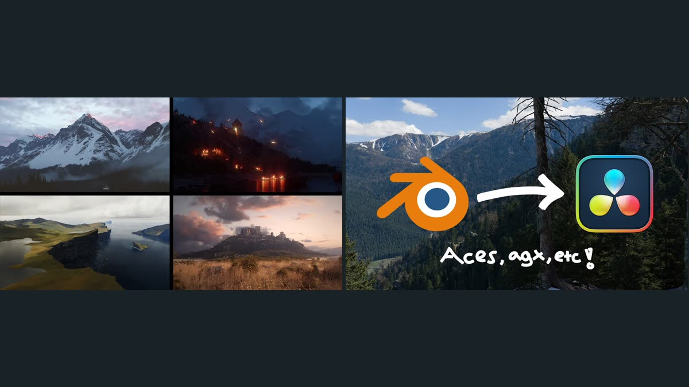
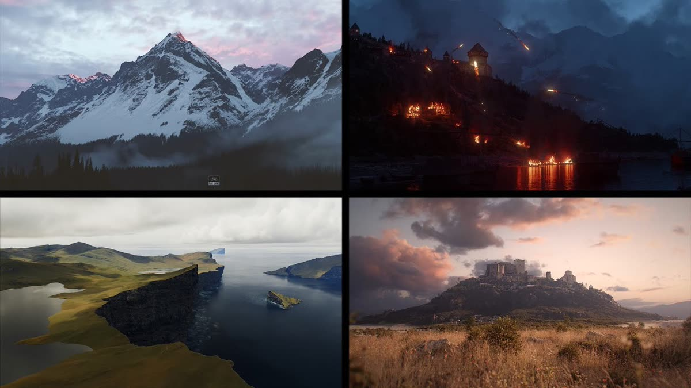
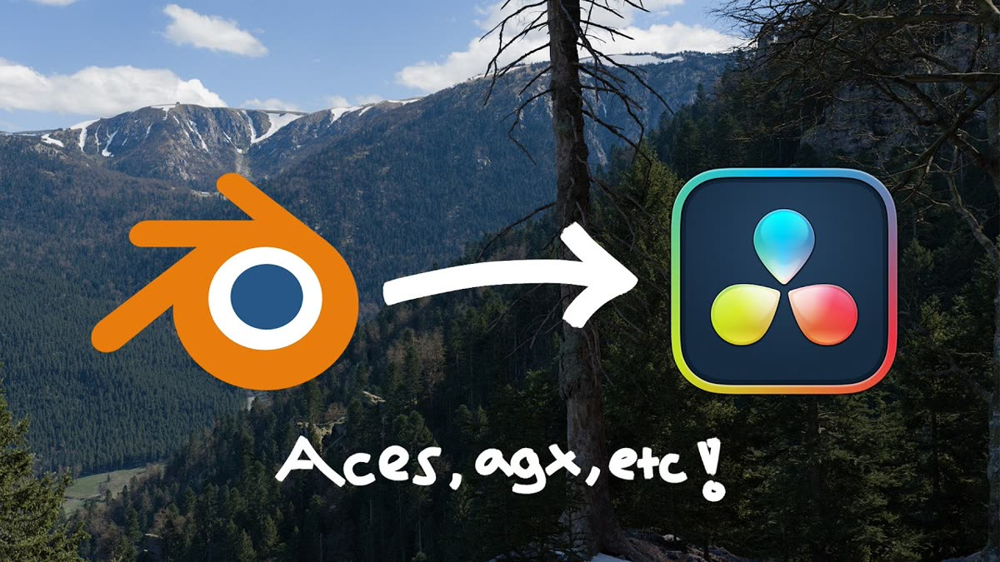

背景アーティスト4人が視聴者の質問に答えるライブ配信と、BlenderのEXRレンダーをDaVinci Resolveで同じ色に揃えるワークフロー解説の2本。

Pro Environment Artists Answer Your Questions! — 4人によるライブ配信（2:41:00）
https://www.youtube.com/watch?v=-Y9m0nl2b5Y

Achieve Identical Colors: Blender to DaVinci Resolve Workflow — 色合わせの手順（17:37）
https://www.youtube.com/watch?v=WLPs5sd94_Q